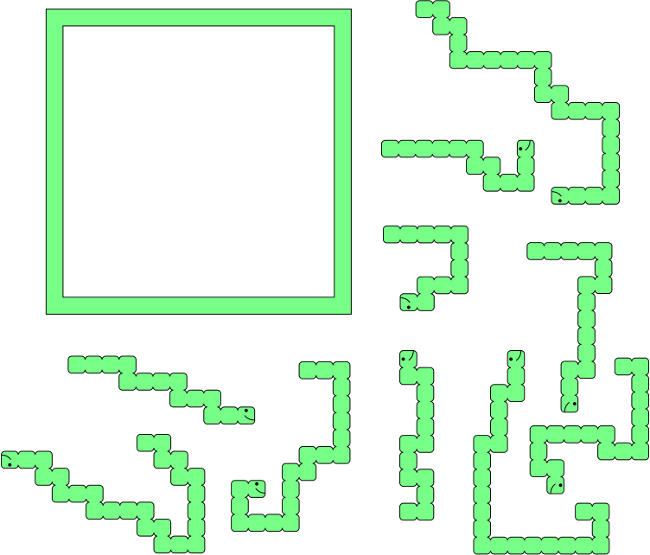

This is a 10-piece jigsaw puzzle, which looks like this:

(Click through to get a printable PDF if you want to make your own.)
When assembled, it looks like this:
Reading the empty spaces, you see the answer: JOY.